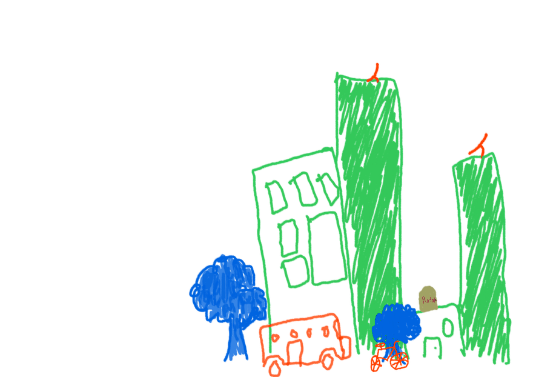
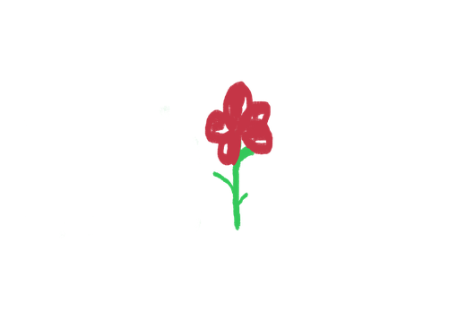

El laboratorio que fundé porque no existía
Guadalajara · 2024 — hoy
Laboratorio Estudiantil de Políticas Públicas. Salí de una práctica profesional con más preguntas que respuestas, busqué dónde aprender a diseñar políticas públicas de verdad, y no había. Así que lo armé.
Frustración, primero
En mi práctica profesional en IMEPLAN trabajé con matrices de indicadores, teoría de cambio, design thinking y diseño público en general. Salí queriendo entenderlo mucho más a fondo. No había cursos ni talleres para eso, ni en mi universidad ni fuera de ella.
Así que los empecé yo. Tuve que constituir el laboratorio, conseguir sedes, convocar a talleristas, diseñar el programa, gestionar patrocinios y correr cada sesión. Fue el primero de su tipo en Guadalajara.
- 7
- Programas de formación
- 62
- Sesiones
- 187
- Horas de taller
- 340
- Personas formadas
Un currículo, no una charla
El Taller de Diseño de Políticas Públicas corre en cuatro módulos: 10 sesiones, 30 horas en aula y 30 horas de trabajo individual. Cada equipo se forma alrededor de una problemática real del Área Metropolitana de Guadalajara, tomada de un banco de problemas que las personas mentoras levantan y diagnostican antes de que empiece el taller.
-
Módulo 1
Acercarse a la disciplina y al proceso de toma de decisiones en el diseño de políticas públicas.
-
Módulo 2
Diseñar propuestas de solución con Marco Lógico, en equipos interdisciplinarios y con retroalimentación constante.
-
Módulo 3
Validar las propuestas con actores realmente involucrados en cada problemática, en una sesión de co-creación.
-
Módulo 4
Redactar policy memos claros y persuasivos, y entregarlos a las autoridades correspondientes.


La incubadora de emprendimiento social
Trece sesiones, de problematizar hasta negociar y medir impacto. Nació de una premisa incómoda: las políticas públicas del AMG no responden de forma adecuada ni sostenible a las necesidades diferenciadas de las juventudes. La respuesta no fue un diagnóstico más, sino un espacio donde las propias juventudes diseñaran y echaran a andar sus proyectos.
- 13
- Sesiones
- 13
- Equipos incubados
- 13
- Equipos que terminaron
Los trece equipos completaron los tres entregables: una teoría de cambio, un prototipo validado y un modelo de negocio. Ninguno abandonó.
Nada de esto se hizo solo
Sedes, contenidos, convocatoria y respaldo institucional vinieron de estas instituciones.
- Dirección de Juventudes Guadalajara
- El Colegio de Jalisco
- Biblioteca Pública del Estado de Jalisco
- Unidad para la Igualdad de la UdeG
- CEIS CUCEA
- CEG UdeG
Sigue vivo sin mí
En junio de 2026 dejé la coordinación general y pasé a asesoría. El laboratorio sigue activo y tiene proyectos nuevos en preparación, dirigido por la generación estudiantil que viene detrás.
Es lo contrario del problema que sigo teniendo con el sistema de minutas, y es la razón por la que lo pongo aquí: sé que una cosa está bien construida cuando deja de necesitarme.
¿Quieres montar un programa de formación así?
Diseñar el currículo es la parte fácil. Lo difícil es que sobreviva a su primera generación. Escríbeme.